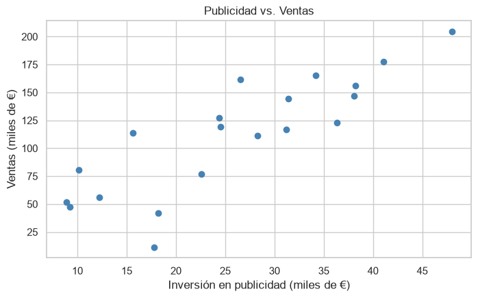
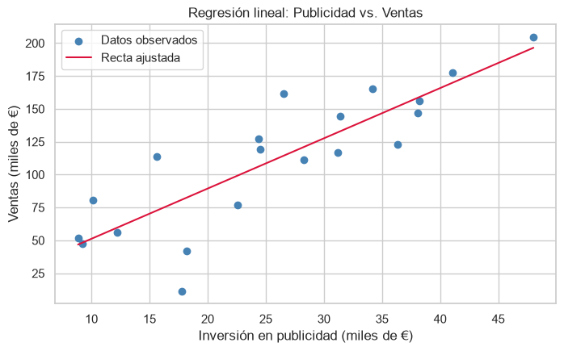
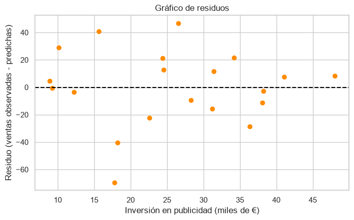
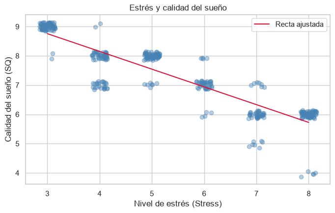

En este cuaderno calculamos correlaciones, ajustamos un modelo de regresión lineal simple, evaluamos su bondad de ajuste y contrastamos si la relación encontrada es estadísticamente significativa.
Para trabajar en tu ordenador, descarga el repositorio completo: el cuaderno necesita la librería src/stats_toolkit y los datos del curso. Las instrucciones de instalación están en el archivo README.md.
La celda siguiente solo actúa en Google Colab: descarga el repositorio del curso, instala las bibliotecas que falten y se sitúa en la carpeta de este cuaderno. Si instala o actualiza alguna, te pedirá que reinicies la sesión y vuelvas a ejecutar el cuaderno. En tu ordenador no hace nada.
Código
# Solo en Google Colab: descarga el repositorio del curso (stats_toolkit y datos),# instala las bibliotecas que falten y se sitúa en la carpeta de este cuaderno.# En otro entorno (tu ordenador, la web del curso) no hace nada.import osimport subprocessimport sysif"google.colab"in sys.modules:from importlib.metadata import PackageNotFoundError, version repo ="/content/Curso-de-Estadistica-Basica"ifnot os.path.isdir(repo): subprocess.run(["git", "clone", "--depth", "1","https://github.com/JulioUQ/Curso-de-Estadistica-Basica.git", repo], check=True)# Bibliotecas de cálculo de requirements.txt (Jupyter ya viene con Colab).withopen(f"{repo}/requirements.txt", encoding="utf-8") as f: requisitos = [linea.split("#")[0].strip() for linea in f] requisitos = [r for r in requisitos if r and r notin ("jupyter", "ipykernel", "nbclient", "nbformat")] nombres = [r.split(">=")[0] for r in requisitos]def versiones(): res = {}for n in nombres:try: res[n] = version(n)except PackageNotFoundError: res[n] =Nonereturn res antes = versiones() subprocess.run([sys.executable, "-m", "pip", "install", "-q", *requisitos], check=True) cambiadas = [n for n, v in versiones().items() if v != antes[n]]if cambiadas:print("Se han instalado o actualizado:", ", ".join(cambiadas))print("Reinicia la sesión (menú «Entorno de ejecución») y vuelve a ejecutar el cuaderno.") os.chdir(f"{repo}/notebooks/05_regresion")
Código
import syssys.path.append("../../src")import numpy as npimport matplotlib.pyplot as pltimport seaborn as snsfrom stats_toolkit import regression as regsns.set_theme(style="whitegrid")plt.rcParams["figure.figsize"] = (8, 4.5) # tamaño común de las figuras de una sola gráfica
12.1 Datos: inversión en publicidad vs. ventas
Simulamos 20 meses de inversión en publicidad (miles de €) y ventas resultantes (miles de €), con una relación lineal real más algo de ruido.
Código
rng = np.random.default_rng(3)publicidad = rng.uniform(5, 50, size=20)ventas =20+3.5* publicidad + rng.normal(0, 25, size=20)plt.scatter(publicidad, ventas, color="steelblue")plt.xlabel("Inversión en publicidad (miles de €)")plt.ylabel("Ventas (miles de €)")plt.title("Publicidad vs. Ventas")plt.show()

12.2 Correlación
Código
r = reg.correlation(publicidad, ventas)print(f"Correlación de Pearson: r = {r:.3f}")
Correlación de Pearson: r = 0.848
12.3 Ajuste del modelo de regresión
Código
beta0, beta1 = reg.simple_linear_regression(publicidad, ventas)print(f"Ventas estimadas = {beta0:.2f} + {beta1:.2f} × Publicidad")x_line = np.linspace(publicidad.min(), publicidad.max(), 100)y_line = reg.predict(x_line, beta0, beta1)plt.scatter(publicidad, ventas, color="steelblue", label="Datos observados")plt.plot(x_line, y_line, color="crimson", label="Recta ajustada")plt.xlabel("Inversión en publicidad (miles de €)")plt.ylabel("Ventas (miles de €)")plt.legend()plt.title("Regresión lineal: Publicidad vs. Ventas")plt.show()
Ventas estimadas = 12.97 + 3.82 × Publicidad

12.4 Residuos y bondad de ajuste
Un buen ajuste debería mostrar residuos dispersos aleatoriamente alrededor de cero, sin ningún patrón sistemático (si hubiera un patrón claro, indicaría que el modelo lineal no captura bien la relación).
Código
resid = reg.residuals(publicidad, ventas, beta0, beta1)plt.scatter(publicidad, resid, color="darkorange")plt.axhline(0, color="black", linestyle="--")plt.xlabel("Inversión en publicidad (miles de €)")plt.ylabel("Residuo (ventas observadas - predichas)")plt.title("Gráfico de residuos")plt.show()r2 = reg.r_squared(publicidad, ventas, beta0, beta1)print(f"R² = {r2:.3f} — el modelo explica el {r2*100:.1f}% de la variabilidad de las ventas")

R² = 0.719 — el modelo explica el 71.9% de la variabilidad de las ventas
12.5 ¿Es la relación estadísticamente significativa?
Contrastamos H0: β1 = 0 (no hay relación real entre publicidad y ventas) frente a H1: β1 ≠ 0.
Código
t_stat, p_value = reg.t_test_slope(publicidad, ventas, beta0, beta1)lower, upper = reg.confidence_interval_slope(publicidad, ventas, beta0, beta1, confidence=0.95)print(f"t = {t_stat:.3f}, p-valor = {p_value:.3g}")print(f"IC 95% para β1: ({lower:.3f}, {upper:.3f})")if p_value <0.05:print("\nConclusión: la relación entre publicidad y ventas es estadísticamente significativa.")else:print("\nConclusión: no hay evidencia suficiente de una relación lineal real.")
t = 6.793, p-valor = 2.31e-06
IC 95% para β1: (2.639, 5.002)
Conclusión: la relación entre publicidad y ventas es estadísticamente significativa.
12.6 Caso real: estrés y calidad del sueño
Aplicamos el mismo análisis a los datos de salud del sueño preparados en el Módulo 1 (datos sintéticos). ¿Se asocia un nivel de estrés más alto con una peor calidad del sueño (SQ)? Ambas variables solo toman valores enteros, así que muchos puntos coinciden; en el gráfico les añadimos un pequeño desplazamiento aleatorio (jitter) solo para poder verlos.
n = 373; r = -0.898; R² = 0.807
SQ estimada = 10.58 + (-0.61) × Stress
t = -39.42, p-valor = 1.05e-134; IC 95 % para β1: (-0.637, -0.577)

La relación es negativa y muy fuerte: cada punto más de estrés se asocia, en promedio, con una calidad del sueño menor, y el modelo explica una gran parte de la variabilidad de SQ. Dos cautelas: es una asociación en datos observacionales (y sintéticos), no un efecto causal; y el conjunto contiene muchas filas con valores idénticos, así que el supuesto de independencia entre observaciones es dudoso y el p-valor y el intervalo probablemente transmiten más precisión de la real.
12.6.1 Pearson frente a Spearman
Stress y SQ son puntuaciones enteras en una escala de 1 a 10: tienen orden, pero no está claro que la distancia entre puntuaciones consecutivas sea siempre la misma. La correlación de Spearman (Módulo 5, teoría) solo usa el orden de los valores, así que es una medida natural para este tipo de escalas.
Los dos coeficientes son muy parecidos (−0,898 y −0,908): la relación es monótona y casi lineal, así que tratar las escalas como numéricas o usar solo su orden lleva a la misma conclusión. El p-valor tan pequeño refleja una asociación fuerte en una muestra grande (\(n = 373\)); con datos sintéticos no debe interpretarse como un hallazgo sobre la salud.
12.7 Ejercicios propuestos
Genera un segundo conjunto de datos donde ventas sea prácticamente independiente de publicidad (por ejemplo, ruido puro sin relación real) y repite todo el análisis. Compara el R² y el p-valor con los obtenidos aquí.
Usa el modelo ajustado para predecir las ventas esperadas con una inversión en publicidad de 60.000 €. ¿Te fías igual de esta predicción que de una dentro del rango de datos observados (5-50)? ¿Por qué?
Calcula la correlación entre publicidad y ventas usando numpy.corrcoef y comprueba que coincide con el resultado de reg.correlation. Comprueba también que r ** 2 coincide con el R² calculado en la sección «Residuos y bondad de ajuste».
Calcula la correlación de Spearman entre publicidad y ventas con reg.spearman_test y compárala con la de Pearson. ¿Esperabas que fueran parecidas?
12.8 Soluciones
Intenta resolver los ejercicios antes de desplegar cada solución. Las soluciones se ejecutan con los mismos datos y semillas que el resto del cuaderno.
TipSolución del ejercicio 1
Generamos ventas que no dependen de la publicidad (ruido alrededor de una constante) y repetimos el análisis.
Sin relación real: R² = 0.059, pendiente = -0.380, p-valor = 0.302
Datos originales: R² = 0.719, pendiente = 3.821, p-valor = 2.31e-06
Sin relación real, la pendiente estimada no es exactamente 0 (por azar nunca lo es), pero el \(R^2\) es pequeño y el p-valor no permite rechazar \(H_0: \beta_1 = 0\). Ten en cuenta que, aun sin relación, alrededor de un 5 % de las muestras darían \(p < 0{,}05\).
TipSolución del ejercicio 2
La inversión está en miles de euros, así que 60.000 € corresponden a \(x = 60\).
Código
prediccion_60 = reg.predict(60, beta0, beta1)print(f"Ventas predichas con 60 mil €: {float(prediccion_60):.1f} miles de €")print(f"Rango observado de publicidad: {publicidad.min():.1f} a {publicidad.max():.1f} miles de €")
Ventas predichas con 60 mil €: 242.2 miles de €
Rango observado de publicidad: 8.9 a 48.0 miles de €
El modelo da un número, pero 60 está fuera del rango observado: es una extrapolación. No sabemos si la relación sigue siendo lineal con inversiones mayores (podría saturarse), así que esta predicción merece mucha menos confianza que una dentro del rango 5-50.
TipSolución del ejercicio 3
np.corrcoef devuelve la matriz de correlaciones; el elemento [0, 1] es la correlación entre ambas variables.
Los dos coeficientes son casi iguales (0,848 y 0,844). Los datos se simularon con una relación lineal y sin atípicos importantes, y en ese caso Pearson y Spearman se parecen. Difieren cuando la relación es monótona pero no lineal, o cuando hay valores atípicos influyentes, como se ve en la teoría del módulo.